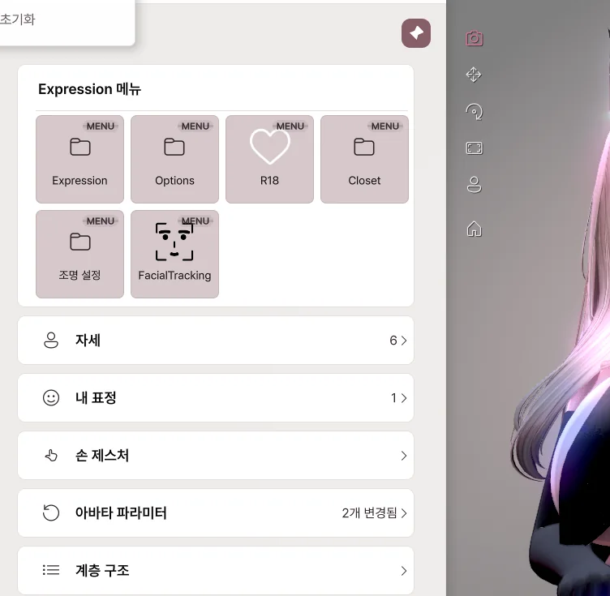
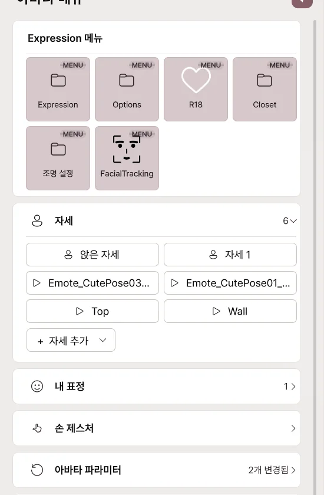
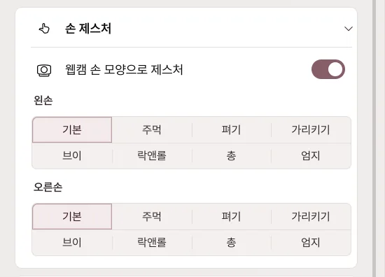

아바타 메뉴
의상·머리·표정 등 아바타 제작자가 넣은 기능을 사용합니다. 모델에 따라 메뉴 이름과 항목이 다릅니다.
의상과 표정 바꾸기
| 조작 | 작동 방식 |
|---|---|
| 켜기·끄기 | 한 번 누르면 켜지고, 다시 누르면 꺼집니다. 의상이나 장식을 바꿀 때 주로 사용합니다. |
| 누르는 버튼 | 누르고 있는 동안만 적용됩니다. 놓으면 풀립니다. |
| 원형 슬라이더 | 손잡이를 움직여 0~100% 사이 값을 정합니다. 연결된 색·크기·표정 강도 등이 변합니다. |
| 방향 패드 | 손잡이를 좌우·위아래로 움직여 여러 표정이나 값을 함께 조절합니다. |
| 폴더 | 하위 메뉴를 엽니다. 뒤로를 누르면 상위 메뉴로 돌아갑니다. |
자주 쓰는 항목 바로 꺼내기

- 즐겨찾기: 메뉴 위쪽에서 빠르게 찾습니다.
- 퀵 액션에 추가: 하단 도구막대에 실행 버튼을 만듭니다.
- 단축키 지정: 키보드로 해당 항목을 실행합니다.
단축키에서 누르는 동안은 키를 놓으면 풀리고, 토글은 다시 누를 때까지 유지됩니다.
자세와 추적

- 자세 타일을 눌러 적용합니다.
- 자세 옆 카메라 아이콘으로 추적 설정을 펼칩니다.
- 페이셜·머리·팔·손가락·몸통을 각각 켜거나 끕니다.
켜진 부위는 내 움직임을 따르고, 꺼진 부위는 저장한 자세를 유지합니다. 예를 들어 머리를 끄고 페이셜을 켜면 고개는 고정한 채 표정만 움직입니다.
손 제스처

왼손과 오른손의 주먹·가위·펼침 등을 고릅니다. 아바타에 손 모양별 표정이 연결되어 있으면 표정도 함께 바뀝니다. 웹캠 손 모양으로 제스처를 켜면 실제 손 모양을 사용합니다.
내 표정
새 표정 만들기로 얼굴 모양을 조절해 저장하거나, .anim 표정 파일을 불러옵니다. 만든 표정은 타일로 적용하고 우클릭으로 퀵 액션이나 단축키에 연결합니다. 표정 만들기에서 순서를 확인하세요.
계층 구조와 쉐이프키
- 계층 구조: 아바타의 부품을 트리로 보여 줍니다. 체크로 부품을 켜고 끕니다.
- 눈 아이콘: 부품의 작동은 유지하면서 화면에서만 숨깁니다.
- 메시: 외형을 그리는 부품을 검색합니다.
- 쉐이프키: 얼굴이나 몸의 변형량을 직접 조절합니다. 직접 고정한 값은 추적보다 우선할 수 있습니다.
되돌리기
아바타 파라미터 → 기본값으로 되돌리기를 누르면 의상·표정 등의 메뉴 값이 아바타의 기본값으로 돌아갑니다.